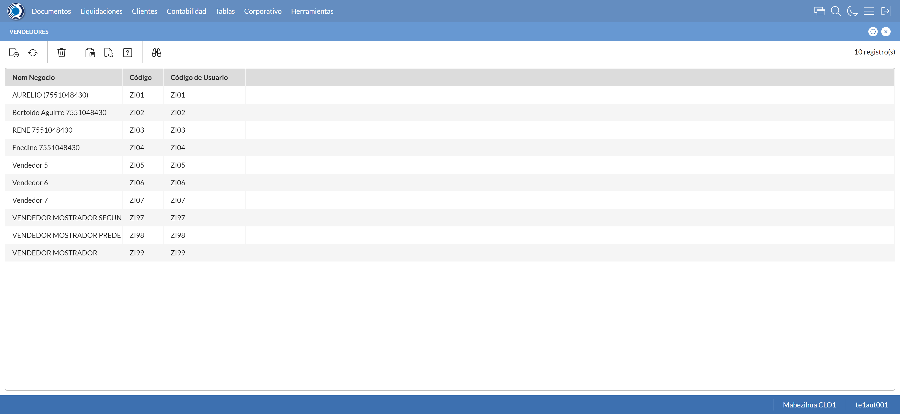
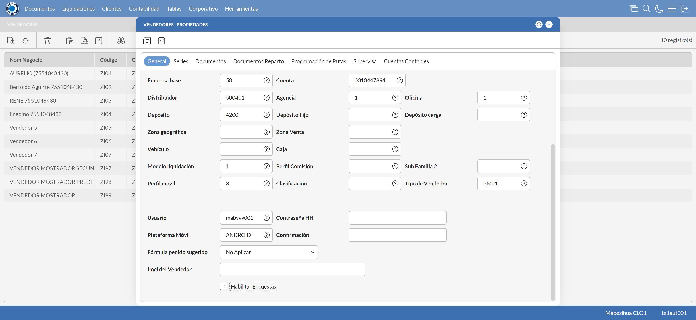
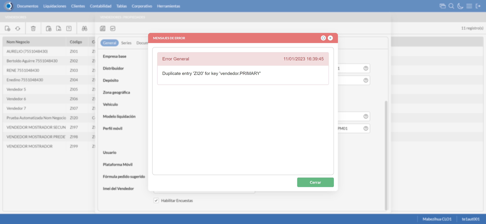
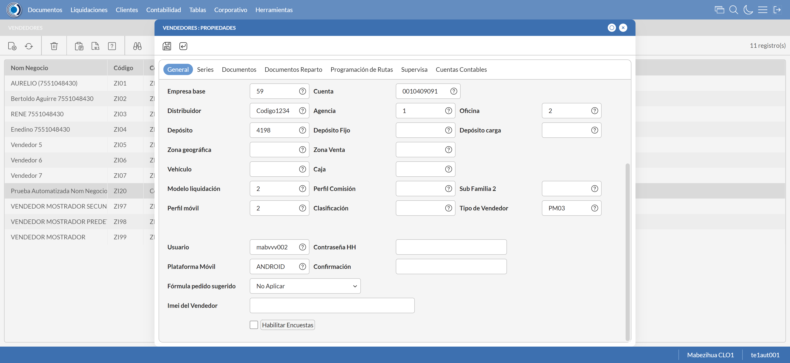
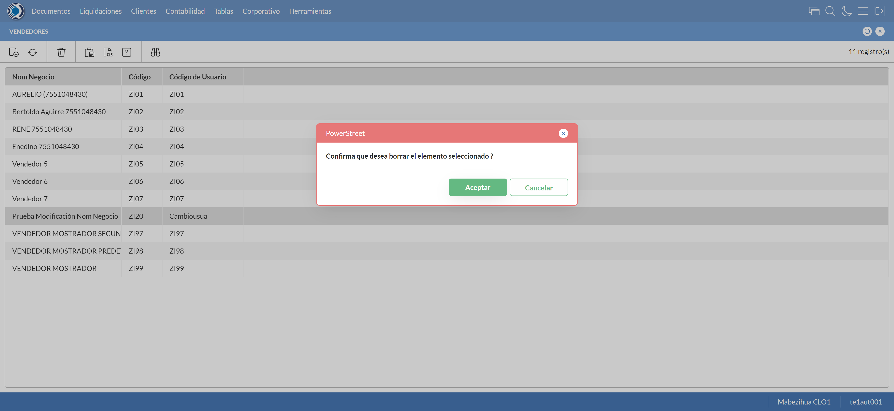

Desarrollado por : Area de Testing PWST
Fecha y hora de inicio : 2023-01-11 10:38:14
Duracion : 0:02:33.610046
Resultado : Total 8，Correctos 7 ，Errores 1 ，Taza de resultado 87.50%
Resumen 87.50% Errores 1 Fallidos 0 Correctos 7 Test realizados 8
| Caso de Prueba | Total | Correctos | Fallido | Error | Detalles | Captura del error |
| Vendedores.Test: Escenario 1 de Vendedores | 8 | 7 | 0 | 1 | Detalles | |
test |
ft1_1: 2023-01-11 10:38:15,849 - root - INFO - Se abre el chrome
2023-01-11 10:38:17,598 - root - INFO - Entra a la URL
2023-01-11 10:38:17,731 - root - INFO - Maximiza la pantalla
Traceback (most recent call last):
File "C:\Users\PWST\AppData\Local\Programs\Python\Python311\Lib\site-packages\selenium\webdriver\remote\switch_to.py", line 87, in frame
frame_reference = self._driver.find_element(By.ID, frame_reference)
^^^^^^^^^^^^^^^^^^^^^^^^^^^^^^^^^^^^^^^^^^^^^^^^^
File "C:\Users\PWST\AppData\Local\Programs\Python\Python311\Lib\site-packages\selenium\webdriver\remote\webdriver.py", line 856, in find_element
return self.execute(Command.FIND_ELEMENT, {
^^^^^^^^^^^^^^^^^^^^^^^^^^^^^^^^^^^^
File "C:\Users\PWST\AppData\Local\Programs\Python\Python311\Lib\site-packages\selenium\webdriver\remote\webdriver.py", line 429, in execute
self.error_handler.check_response(response)
File "C:\Users\PWST\AppData\Local\Programs\Python\Python311\Lib\site-packages\selenium\webdriver\remote\errorhandler.py", line 243, in check_response
raise exception_class(message, screen, stacktrace)
selenium.common.exceptions.NoSuchElementException: Message: no such element: Unable to locate element: {"method":"css selector","selector":"[id="mainFrame"]"}
(Session info: chrome=108.0.5359.125)
Stacktrace:
Backtrace:
Ordinal0 [0x0091ACD3+2075859]
Ordinal0 [0x008AEE61+1633889]
Ordinal0 [0x007AB7BD+571325]
Ordinal0 [0x007DAC2F+764975]
Ordinal0 [0x007DAE1B+765467]
Ordinal0 [0x0080D0F2+970994]
Ordinal0 [0x007F7364+881508]
Ordinal0 [0x0080B56A+963946]
Ordinal0 [0x007F7136+880950]
Ordinal0 [0x007CFEFD+720637]
Ordinal0 [0x007D0F3F+724799]
GetHandleVerifier [0x00BCEED2+2769538]
GetHandleVerifier [0x00BC0D95+2711877]
GetHandleVerifier [0x009AA03A+521194]
GetHandleVerifier [0x009A8DA0+516432]
Ordinal0 [0x008B682C+1665068]
Ordinal0 [0x008BB128+1683752]
Ordinal0 [0x008BB215+1683989]
Ordinal0 [0x008C6484+1729668]
BaseThreadInitThunk [0x75E100F9+25]
RtlGetAppContainerNamedObjectPath [0x77017BBE+286]
RtlGetAppContainerNamedObjectPath [0x77017B8E+238]
During handling of the above exception, another exception occurred:
Traceback (most recent call last):
File "C:\Users\PWST\AppData\Local\Programs\Python\Python311\Lib\site-packages\selenium\webdriver\remote\switch_to.py", line 90, in frame
frame_reference = self._driver.find_element(By.NAME, frame_reference)
^^^^^^^^^^^^^^^^^^^^^^^^^^^^^^^^^^^^^^^^^^^^^^^^^^^
File "C:\Users\PWST\AppData\Local\Programs\Python\Python311\Lib\site-packages\selenium\webdriver\remote\webdriver.py", line 856, in find_element
return self.execute(Command.FIND_ELEMENT, {
^^^^^^^^^^^^^^^^^^^^^^^^^^^^^^^^^^^^
File "C:\Users\PWST\AppData\Local\Programs\Python\Python311\Lib\site-packages\selenium\webdriver\remote\webdriver.py", line 429, in execute
self.error_handler.check_response(response)
File "C:\Users\PWST\AppData\Local\Programs\Python\Python311\Lib\site-packages\selenium\webdriver\remote\errorhandler.py", line 243, in check_response
raise exception_class(message, screen, stacktrace)
selenium.common.exceptions.NoSuchElementException: Message: no such element: Unable to locate element: {"method":"css selector","selector":"[name="mainFrame"]"}
(Session info: chrome=108.0.5359.125)
Stacktrace:
Backtrace:
Ordinal0 [0x0091ACD3+2075859]
Ordinal0 [0x008AEE61+1633889]
Ordinal0 [0x007AB7BD+571325]
Ordinal0 [0x007DAC2F+764975]
Ordinal0 [0x007DAE1B+765467]
Ordinal0 [0x0080D0F2+970994]
Ordinal0 [0x007F7364+881508]
Ordinal0 [0x0080B56A+963946]
Ordinal0 [0x007F7136+880950]
Ordinal0 [0x007CFEFD+720637]
Ordinal0 [0x007D0F3F+724799]
GetHandleVerifier [0x00BCEED2+2769538]
GetHandleVerifier [0x00BC0D95+2711877]
GetHandleVerifier [0x009AA03A+521194]
GetHandleVerifier [0x009A8DA0+516432]
Ordinal0 [0x008B682C+1665068]
Ordinal0 [0x008BB128+1683752]
Ordinal0 [0x008BB215+1683989]
Ordinal0 [0x008C6484+1729668]
BaseThreadInitThunk [0x75E100F9+25]
RtlGetAppContainerNamedObjectPath [0x77017BBE+286]
RtlGetAppContainerNamedObjectPath [0x77017B8E+238]
During handling of the above exception, another exception occurred:
Traceback (most recent call last):
File "C:\xampp\htdocs\Versiones\automatizaciones\AutoPWST\01VE\testCase\Vendedores.py", line 36, in test
self.driver.switch_to.frame("mainFrame")
File "C:\Users\PWST\AppData\Local\Programs\Python\Python311\Lib\site-packages\selenium\webdriver\remote\switch_to.py", line 92, in frame
raise NoSuchFrameException(frame_reference)
selenium.common.exceptions.NoSuchFrameException: Message: mainFrame
|
|
||||
test_000: Ingresa a la base de datos |
pt1_2: 2023-01-11 10:38:20,849 - root - INFO - Escribe el usuario
2023-01-11 10:38:20,964 - root - INFO - Escribe la contraseña
2023-01-11 10:38:21,083 - root - INFO - Se dio clic en el boton ingresar
2023-01-11 10:38:22,366 - root - INFO - Ejecutar Enterprise
2023-01-11 10:38:26,432 - root - INFO - Cambia entre pestañas
|
|
||||
test_001: Abre menu y ejecuta pantalla |
pt1_3: 2023-01-11 10:38:39,416 - root - INFO - Abre la pantalla de Familias de Impuestos
2023-01-11 10:38:40,004 - root - INFO - La pantalla ejecutada es Familias de Impuestos
2023-01-11 10:38:40,005 - root - INFO - Captura: C:\xampp\htdocs\Versiones\automatizaciones\AutoPWST\01VE\report\img screen：20230111_10_38_40.png
2023-01-11 10:38:50,938 - root - INFO - Se presiona el boton 'Nuevo', para crear un nuevo registro.
|
 | ||||
test_002: Abre la ventana de nuevo y crear un registro |
pt1_4: 2023-01-11 10:38:51,507 - root - INFO - Se abrio la pantalla para el ingreso de un registro nuevo.
2023-01-11 10:38:51,548 - root - INFO - El campo 'Codigo' si se encuentra visible.
2023-01-11 10:38:51,586 - root - INFO - El campo 'Código Alternativo' si se encuentra visible.
2023-01-11 10:38:51,684 - root - INFO - El campo 'Código Usuario' si se encuentra visible.
2023-01-11 10:38:51,723 - root - INFO - El campo 'Nom Negocio' si se encuentra visible.
2023-01-11 10:38:51,765 - root - INFO - El campo 'Documento de Identidad' si se encuentra visible.
2023-01-11 10:38:51,806 - root - INFO - El campo 'Calle' si se encuentra visible.
2023-01-11 10:38:51,845 - root - INFO - El campo 'Nro. Puerta' si se encuentra visible.
2023-01-11 10:38:51,891 - root - INFO - El campo 'Esquinas' si se encuentra visible.
2023-01-11 10:38:51,939 - root - INFO - El campo 'Teléfonos' si se encuentra visible.
2023-01-11 10:38:51,985 - root - INFO - El campo 'Empresa base' si se encuentra visible.
2023-01-11 10:38:52,023 - root - INFO - El campo 'Cuenta base' si se encuentra visible.
2023-01-11 10:38:52,069 - root - INFO - El campo 'Distribuidor base' si se encuentra visible.
2023-01-11 10:38:52,125 - root - INFO - El campo 'Agencia' si se encuentra visible.
2023-01-11 10:38:52,165 - root - INFO - El campo 'Oficina' si se encuentra visible.
2023-01-11 10:38:52,204 - root - INFO - El campo 'Depósito' si se encuentra visible.
2023-01-11 10:38:52,243 - root - INFO - El campo 'Modelo liquidación' si se encuentra visible.
2023-01-11 10:38:52,288 - root - INFO - El campo 'Perfil móvil' si se encuentra visible.
2023-01-11 10:38:52,330 - root - INFO - El campo 'Tipo de Vendedor' si se encuentra visible.
2023-01-11 10:38:52,366 - root - INFO - El campo 'Plataforma Móvil' si se encuentra visible.
2023-01-11 10:38:52,406 - root - INFO - El campo 'Fórmula pedido sugerido' si se encuentra visible.
2023-01-11 10:38:52,448 - root - INFO - El campo 'Habilitar Encuestas' si se encuentra visible.
2023-01-11 10:38:52,519 - root - INFO - Ingresa el codigo del nuevo registro
2023-01-11 10:38:52,643 - root - INFO - Ingresa el codigo alternativo del nuevo registro
2023-01-11 10:38:52,747 - root - INFO - Ingresa el codigo usuario del nuevo registro
2023-01-11 10:38:52,891 - root - INFO - Ingresa el Nom Negocio del nuevo registro
2023-01-11 10:38:53,049 - root - INFO - Ingresa el Documento de Identidad del nuevo registro
2023-01-11 10:38:53,201 - root - INFO - Ingresa la calle del nuevo registro
2023-01-11 10:38:53,294 - root - INFO - Ingresa el nro puerta del nuevo registro
2023-01-11 10:38:53,410 - root - INFO - Ingresa la Esquina 1 del nuevo registro
2023-01-11 10:38:53,526 - root - INFO - Ingresa la Esquina 2 del nuevo registro
2023-01-11 10:38:53,637 - root - INFO - Ingresa el Telefono 1 del nuevo registro
2023-01-11 10:38:53,738 - root - INFO - Ingresa el Telefono 2 del nuevo registro
2023-01-11 10:39:10,381 - root - INFO - Captura: C:\xampp\htdocs\Versiones\automatizaciones\AutoPWST\01VE\report\img screen：20230111_10_39_10.png
2023-01-11 10:39:10,968 - root - INFO - Se hace el cambio de pestaña para continuar con el registro nuevo
2023-01-11 10:39:11,568 - root - INFO - Se presiona el boton 'Nuevo', para crear un nuevo registro.
2023-01-11 10:39:12,160 - root - INFO - El campo 'Serie base' si se encuentra visible.
2023-01-11 10:39:12,253 - root - INFO - El campo 'Tipo Impresora' si se encuentra visible.
2023-01-11 10:39:12,299 - root - INFO - El campo 'Puerto Impresora' si se encuentra visible.
2023-01-11 10:39:12,345 - root - INFO - El campo 'Impresora + Lenguaje' si se encuentra visible.
2023-01-11 10:39:12,386 - root - INFO - El campo 'Clave correlativo' si se encuentra visible.
2023-01-11 10:39:12,432 - root - INFO - El campo 'Desde número' si se encuentra visible.
2023-01-11 10:39:12,486 - root - INFO - El campo 'Hasta número' si se encuentra visible.
2023-01-11 10:39:14,599 - root - INFO - Ingresa la Clave Correlativo del nuevo registro
2023-01-11 10:39:14,734 - root - INFO - Ingresa Desde Numero del nuevo registro
2023-01-11 10:39:14,892 - root - INFO - Ingresa Hasta Numero del nuevo registro
2023-01-11 10:39:15,017 - root - INFO - Se presiona el boton 'Guardar', para guardar el registro.
2023-01-11 10:39:15,425 - root - INFO - Se hace el cambio de pestaña para continuar con el registro nuevo
2023-01-11 10:39:16,049 - root - INFO - Se presiona el boton 'Nuevo', para crear un nuevo registro.
2023-01-11 10:39:16,614 - root - INFO - El campo 'Tipo documento' si se encuentra visible.
2023-01-11 10:39:16,662 - root - INFO - El campo 'Modelo de Impresión' si se encuentra visible.
2023-01-11 10:39:19,494 - root - INFO - Se presiona el boton 'Guardar', para guardar el registro.
2023-01-11 10:39:19,934 - root - INFO - Se hace el cambio de pestaña para continuar con el registro nuevo
2023-01-11 10:39:20,567 - root - INFO - Se presiona el boton 'Nuevo', para crear un nuevo registro.
2023-01-11 10:39:21,129 - root - INFO - El campo 'Tipo Documento 2' si se encuentra visible.
2023-01-11 10:39:21,169 - root - INFO - El campo 'Modelo de Impresión' si se encuentra visible.
2023-01-11 10:39:24,004 - root - INFO - Se presiona el boton 'Guardar', para guardar el registro.
2023-01-11 10:39:25,136 - root - INFO - Se da clic en el boton Guardar; se debe crear un nuevo registro.
|
 | ||||
test_003: Repetir el registro creado anteriormente |
pt1_5: 2023-01-11 10:39:26,254 - root - INFO - Se presiona el boton 'Refrescar', para crear un nuevo registro igual al anterior.
2023-01-11 10:39:26,516 - root - INFO - Se presiona el boton 'Nuevo', para crear un nuevo registro igual al anterior.
2023-01-11 10:39:27,069 - root - INFO - Se abrio la pantalla para el ingreso de un registro nuevo.
2023-01-11 10:39:27,107 - root - INFO - El campo 'Codigo' si se encuentra visible.
2023-01-11 10:39:27,144 - root - INFO - El campo 'Código Alternativo' si se encuentra visible.
2023-01-11 10:39:27,181 - root - INFO - El campo 'Código Usuario' si se encuentra visible.
2023-01-11 10:39:27,219 - root - INFO - El campo 'Nom Negocio' si se encuentra visible.
2023-01-11 10:39:27,310 - root - INFO - El campo 'Documento de Identidad' si se encuentra visible.
2023-01-11 10:39:27,348 - root - INFO - El campo 'Calle' si se encuentra visible.
2023-01-11 10:39:27,384 - root - INFO - El campo 'Nro. Puerta' si se encuentra visible.
2023-01-11 10:39:27,420 - root - INFO - El campo 'Esquinas' si se encuentra visible.
2023-01-11 10:39:27,455 - root - INFO - El campo 'Teléfonos' si se encuentra visible.
2023-01-11 10:39:27,491 - root - INFO - El campo 'Empresa base' si se encuentra visible.
2023-01-11 10:39:27,536 - root - INFO - El campo 'Cuenta base' si se encuentra visible.
2023-01-11 10:39:27,573 - root - INFO - El campo 'Distribuidor base' si se encuentra visible.
2023-01-11 10:39:27,608 - root - INFO - El campo 'Agencia' si se encuentra visible.
2023-01-11 10:39:27,643 - root - INFO - El campo 'Oficina' si se encuentra visible.
2023-01-11 10:39:27,679 - root - INFO - El campo 'Depósito' si se encuentra visible.
2023-01-11 10:39:27,715 - root - INFO - El campo 'Modelo liquidación' si se encuentra visible.
2023-01-11 10:39:27,786 - root - INFO - El campo 'Perfil móvil' si se encuentra visible.
2023-01-11 10:39:27,827 - root - INFO - El campo 'Tipo de Vendedor' si se encuentra visible.
2023-01-11 10:39:27,860 - root - INFO - El campo 'Plataforma Móvil' si se encuentra visible.
2023-01-11 10:39:27,896 - root - INFO - El campo 'Fórmula pedido sugerido' si se encuentra visible.
2023-01-11 10:39:27,932 - root - INFO - El campo 'Habilitar Encuestas' si se encuentra visible.
2023-01-11 10:39:27,992 - root - INFO - Ingresa el codigo del nuevo registro
2023-01-11 10:39:28,091 - root - INFO - Ingresa el codigo alternativo del nuevo registro
2023-01-11 10:39:28,185 - root - INFO - Ingresa el codigo usuario del nuevo registro
2023-01-11 10:39:28,326 - root - INFO - Ingresa el Nom Negocio del nuevo registro
2023-01-11 10:39:28,446 - root - INFO - Ingresa el Documento de Identidad del nuevo registro
2023-01-11 10:39:28,584 - root - INFO - Ingresa la calle del nuevo registro
2023-01-11 10:39:28,666 - root - INFO - Ingresa el nro puerta del nuevo registro
2023-01-11 10:39:28,763 - root - INFO - Ingresa la Esquina 1 del nuevo registro
2023-01-11 10:39:28,875 - root - INFO - Ingresa la Esquina 2 del nuevo registro
2023-01-11 10:39:28,960 - root - INFO - Ingresa el Telefono 1 del nuevo registro
2023-01-11 10:39:29,061 - root - INFO - Ingresa el Telefono 2 del nuevo registro
2023-01-11 10:39:44,491 - root - INFO - Se da clic en el boton Guardar; se debe crear un nuevo registro.
2023-01-11 10:39:45,492 - root - INFO - Captura: C:\xampp\htdocs\Versiones\automatizaciones\AutoPWST\01VE\report\img screen：20230111_10_39_45.png
2023-01-11 10:39:47,112 - root - INFO - Captura: C:\xampp\htdocs\Versiones\automatizaciones\AutoPWST\01VE\report\img screen：20230111_10_39_47.png
2023-01-11 10:39:53,181 - root - INFO - Se presiona el boton 'Cerrar', para cerrar el mensaje de duplicidad de llave primaria
2023-01-11 10:39:54,183 - root - INFO - Captura: C:\xampp\htdocs\Versiones\automatizaciones\AutoPWST\01VE\report\img screen：20230111_10_39_54.png
2023-01-11 10:39:55,209 - root - INFO - Se presiona el boton 'Cerrar', para cerrar el mensaje de duplicidad de llave primaria
2023-01-11 10:39:55,421 - root - INFO - Se presiona el boton 'Cerrar', para cerrar la ventana
|
 | ||||
test_004: Modificar el registro |
pt1_6: 2023-01-11 10:39:55,639 - root - INFO - Se presiona el boton 'Refrescar', para crear un nuevo registro igual al anterior.
2023-01-11 10:39:57,378 - root - INFO - Se da clic en el registro creado, para proceder a modificarlo.
2023-01-11 10:39:58,744 - root - INFO - Ingresa el codigo alternativo del nuevo registro
2023-01-11 10:39:59,066 - root - INFO - Ingresa el codigo usuario del nuevo registro
2023-01-11 10:39:59,296 - root - INFO - Ingresa el Nom Negocio del nuevo registro
2023-01-11 10:39:59,534 - root - INFO - Ingresa el Documento de Identidad del nuevo registro
2023-01-11 10:39:59,782 - root - INFO - Ingresa la calle del nuevo registro
2023-01-11 10:40:00,080 - root - INFO - Ingresa el nro puerta del nuevo registro
2023-01-11 10:40:00,279 - root - INFO - Ingresa la Esquina 1 del nuevo registro
2023-01-11 10:40:00,497 - root - INFO - Ingresa la Esquina 2 del nuevo registro
2023-01-11 10:40:00,695 - root - INFO - Ingresa el Telefono 1 del nuevo registro
2023-01-11 10:40:00,907 - root - INFO - Ingresa el Telefono 2 del nuevo registro
2023-01-11 10:40:18,303 - root - INFO - Captura: C:\xampp\htdocs\Versiones\automatizaciones\AutoPWST\01VE\report\img screen：20230111_10_40_18.png
2023-01-11 10:40:18,967 - root - INFO - Se hace el cambio de pestaña para continuar con el registro nuevo
2023-01-11 10:40:20,076 - root - INFO - Se da clic en el registro creado, para proceder a modificarlo.
2023-01-11 10:40:20,181 - root - INFO - Se presiona el boton 'Eliminar', para eliminar el registro.
2023-01-11 10:40:20,392 - root - INFO - Se presiona el boton 'Nuevo', para crear un nuevo registro.
2023-01-11 10:40:23,819 - root - INFO - Ingresa la Clave Correlativo del nuevo registro
2023-01-11 10:40:24,108 - root - INFO - Ingresa Desde Numero del nuevo registro
2023-01-11 10:40:24,407 - root - INFO - Ingresa Hasta Numero del nuevo registro
2023-01-11 10:40:24,586 - root - INFO - Se presiona el boton 'Guardar', para guardar el registro.
2023-01-11 10:40:24,915 - root - INFO - Se hace el cambio de pestaña para continuar con el registro nuevo
2023-01-11 10:40:26,136 - root - INFO - Se da clic en el registro creado, para proceder a modificarlo.
2023-01-11 10:40:28,055 - root - INFO - Se presiona el boton 'Guardar', para guardar el registro.
2023-01-11 10:40:28,513 - root - INFO - Se hace el cambio de pestaña para continuar con el registro nuevo
2023-01-11 10:40:29,657 - root - INFO - Se da clic en el registro creado, para proceder a modificarlo.
2023-01-11 10:40:32,689 - root - INFO - Se presiona el boton 'Guardar', para guardar el registro.
2023-01-11 10:40:33,834 - root - INFO - Se da clic en el boton Guardar; se debe modificar la informacion del registro.
|
 | ||||
test_005: Eliminar el registro creado |
pt1_7: 2023-01-11 10:40:34,252 - root - INFO - Se presiona el boton 'Refrescar', para proceder a eliminar el registro.
2023-01-11 10:40:35,959 - root - INFO - Se da clic en el registro creado, para proceder a eliminarlo.
2023-01-11 10:40:36,596 - root - INFO - Se hace el cambio de pestaña para continuar con el registro nuevo
2023-01-11 10:40:37,737 - root - INFO - Se da clic en el registro creado, para proceder a modificarlo.
2023-01-11 10:40:37,844 - root - INFO - Se presiona el boton 'Eliminar', para eliminar el registro.
2023-01-11 10:40:38,012 - root - INFO - Se hace el cambio de pestaña para continuar con el registro nuevo
2023-01-11 10:40:39,164 - root - INFO - Se da clic en el registro creado, para proceder a modificarlo.
2023-01-11 10:40:39,271 - root - INFO - Se presiona el boton 'Eliminar', para eliminar el registro.
2023-01-11 10:40:39,471 - root - INFO - Se hace el cambio de pestaña para continuar con el registro nuevo
2023-01-11 10:40:40,560 - root - INFO - Se da clic en el registro creado, para proceder a modificarlo.
2023-01-11 10:40:40,636 - root - INFO - Se presiona el boton 'Eliminar', para eliminar el registro.
2023-01-11 10:40:40,756 - root - INFO - Se da clic en el boton Guardar; se debe modificar la informacion del registro.
2023-01-11 10:40:41,355 - root - INFO - Se da clic en el registro creado, para proceder a eliminarlo.
2023-01-11 10:40:42,461 - root - INFO - Se presiona el boton 'Eliminar', para eliminar el registro.
2023-01-11 10:40:42,463 - root - INFO - Captura: C:\xampp\htdocs\Versiones\automatizaciones\AutoPWST\01VE\report\img screen：20230111_10_40_42.png
2023-01-11 10:40:43,040 - root - INFO - Se confirma el eliminado del registro
2023-01-11 10:40:43,420 - root - INFO - Se presiona el boton 'Refrescar', para crear un nuevo registro igual al anterior.
2023-01-11 10:40:43,637 - root - INFO - Se presiona el boton 'Cerrar', para cerrar la pantalla de Categorias Fiscales.
|
 | ||||
test_006: Cerrar_Navegador |
pt1_8: 2023-01-11 10:40:48,081 - root - INFO - Se cierra chrome
|
|
||||
| Caso de prueba | 8 | 7 | 0 | 1 | Taza de resultado：87.50% | |